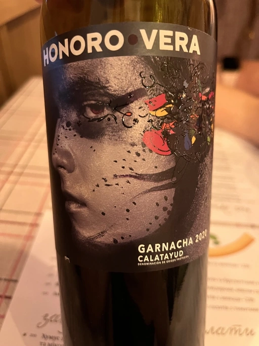

- Type
- Red Still, Dry
- Producer
- Honoro Vera
- Vintage
- 2020
- Location
- Spain, Calatayud DO
- Grapes
- Grenache
- Alcohol
- 14.5
- Sugar
- NA
- Price
- 275 UAH
- Cellar
- N/A
Ratings
2022-11-05 - 7.00
I haven’t tasted this wine for many years. And it’s as good as I remember it. Yes, it’s trivial, yet a good match for heavy lunch. Black fruits, vanilla, medicinal herbs. Powerful palate, round tannin, and a decent balance.